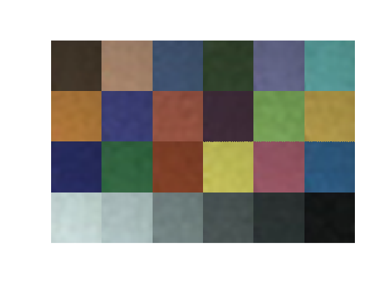

Retrieve RGB from captured images
cx = 1920/2;
cy = 1080/2;
cx = 970;
cy = 450;
hl = 15;
window_size = 2 * hl + 1;
xrange = [cx-hl:cx+hl];
yrange = [cy-hl:cy+hl];
rgbcapsule = zeros(24,3);
canvas = uint8(zeros(window_size*4,window_size*6,3));
for i = 1:24
fn = sprintf('raw_image/b%02d.tif',i);
im = imread(fn);
roi = im(yrange,xrange,:);
rgb = [mean(mean(roi(:,:,1))) mean(mean(roi(:,:,2))) mean(mean(roi(:,:,3)))];
rgbcapsule(i,1:3) = rgb;
im(yrange,xrange,1) = 255;
im(yrange,xrange,2) = 0;
im(yrange,xrange,3) = 0;
subplot(4,6,i)
imshow(im)
row = floor((i-1)/6);
col = mod((i-1),6);
posx = window_size * col + 1;
posy = window_size * row + 1;
canvas(posy:posy+window_size-1,posx:posx+window_size-1,:) = roi;
end
save('rgbcapsule.mat','rgbcapsule')
saveas(gcf,'ROI.png')
clf
image(canvas)
axis image
axis off
saveas(gcf,'ROI_stitched.png')
labcapsule = zeros(24,3);
for i = 1:24
labcapsule(i,1:3) = srgb2lab(rgbcapsule(i,1:3)/255);
end
save('labcapsule.mat','labcapsule')
